ПЕРЕВАГА
Персональні маршрути
План, який враховує твій темп, інтереси та тривалість подорожі.
★ 4.8
ТВІЙ ПЕРСОНАЛЬНИЙ ГІД ПО ЄВРОПІ
Створи персональний маршрут відповідно до своїх інтересів, часу та бюджету — і знаходь місця, які хочеться запам’ятати.
ПОДОРОЖУЙ ПО-СВОЄМУ
Усе необхідне для планування подорожі
План, який враховує твій темп, інтереси та тривалість подорожі.
★ 4.8
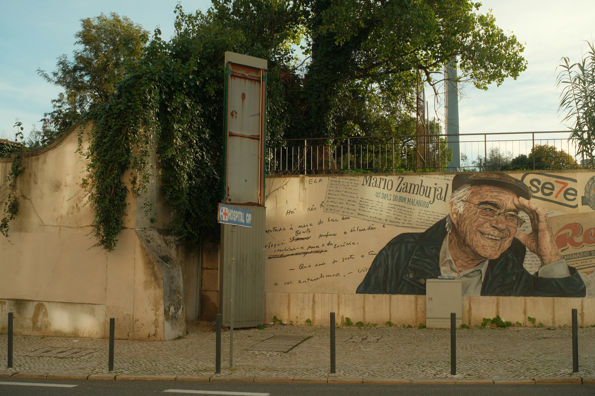
Локальні квартали, тихі узбережжя й адреси, які знають місцеві.
★ 4.8
Прозорий розрахунок витрат на дорогу, житло, їжу та враження.
★ 4.8
Усі дні, переїзди та збережені місця — в одному зрозумілому плані.
★ 4.8
ВІДКРИВАЙТЕ ЄВРОПУ
Шість країн, безліч настроїв — обери точку старту для свого персонального маршруту.
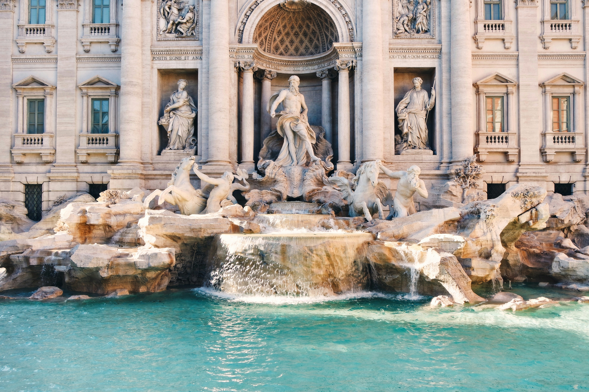
Міста мистецтва, озера й повільні вечори
★ 4.8
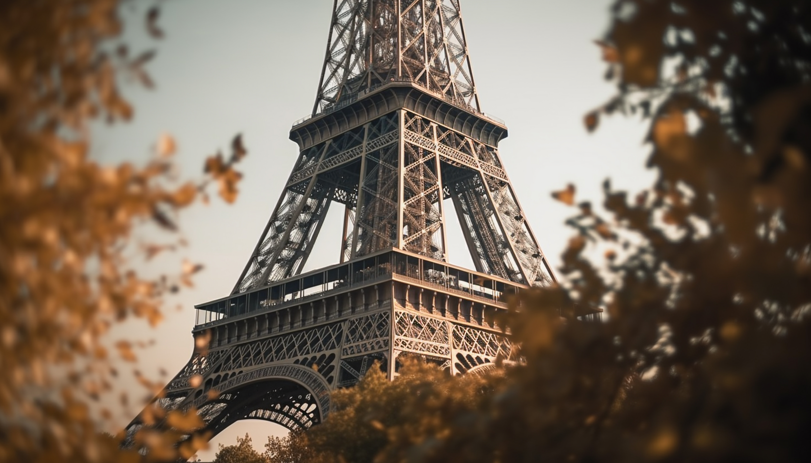
Атлантика, винні дороги та Париж
★ 4.8
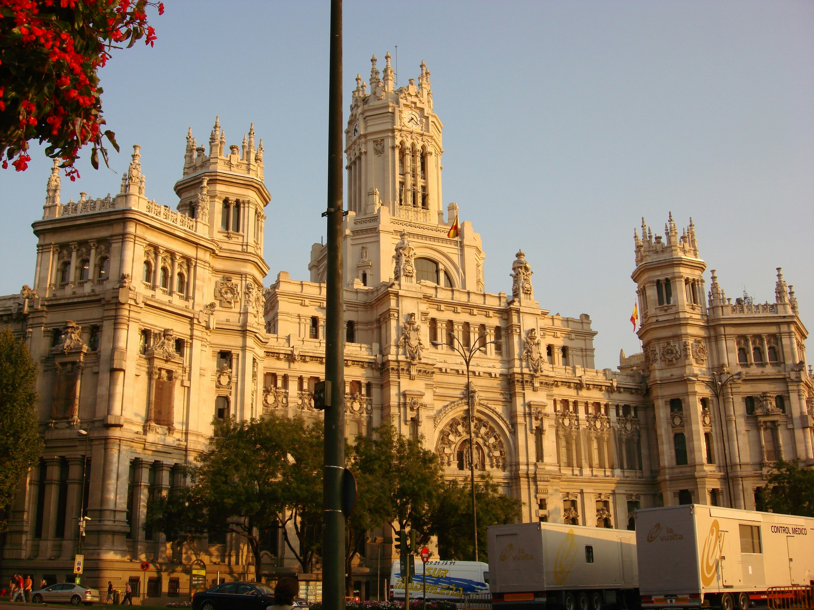
Архітектура, узбережжя й нічне життя
★ 4.8
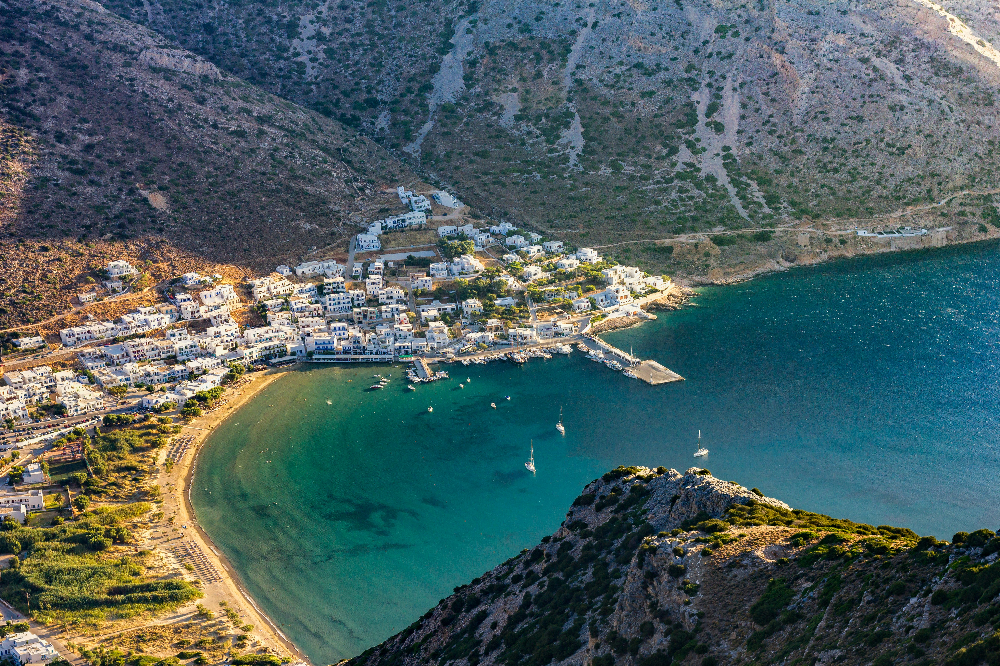
Острови, античність і бірюзове море
★ 4.8
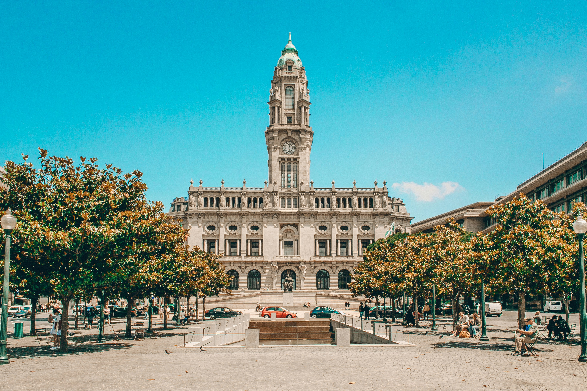
Океан, азулежу та золоті міста
★ 4.8
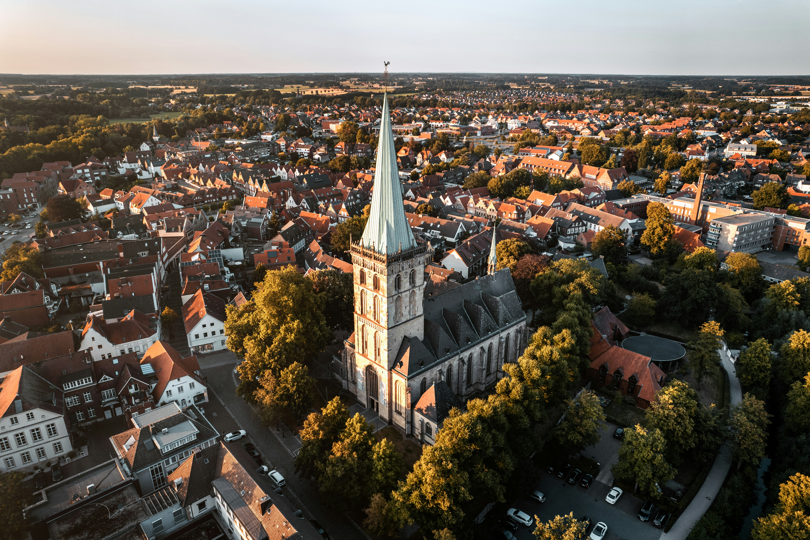
Сучасні міста, ліси та замкові дороги
★ 4.8
ВІДКРИВАЙТЕ ЄВРОПУ
Готові напрямки для натхнення — адаптуй кожну ідею під свій ритм.
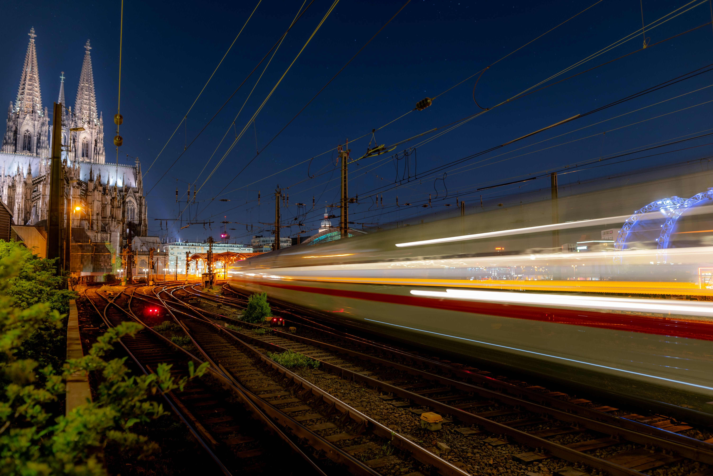
Прага → Відень → Любляна · 8 днів
★ 4.8
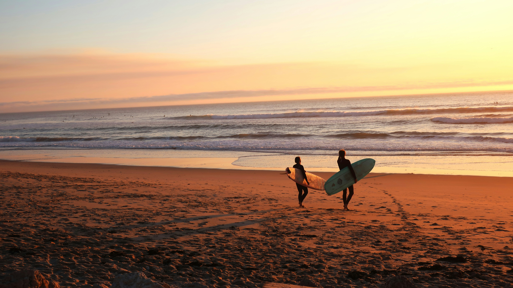
Алгарве й Атлантика · 6 днів
★ 4.8

Болонья → Парма → Модена · 5 днів
★ 4.8
ВІДКРИВАЙТЕ ЄВРОПУ
Мандрівники про маршрути, що відчувалися особистими від першого дня.
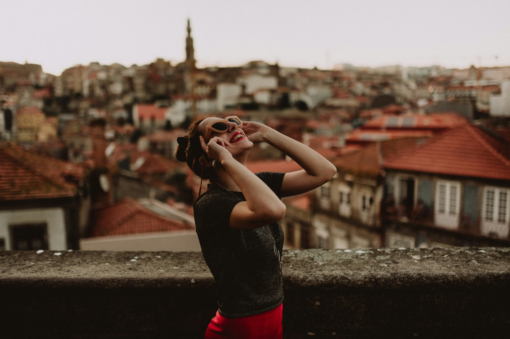
«Маршрут вийшов дуже наш: ранкові музеї, маленькі кав’ярні й жодного поспіху». — Лісабон і Сінтра
★ 4.8
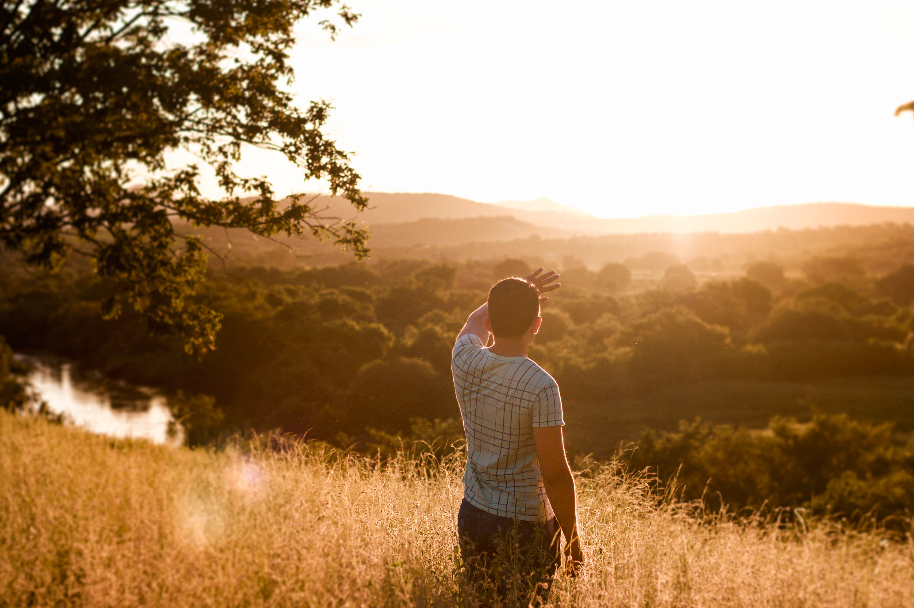
«AI добре розподілив бюджет і запропонував місця, про які ми навіть не чули». — Північна Італія
★ 4.8
«За один вечір отримала цілісну подорож із переїздами, житлом і місцями для дітей». — Баварія
★ 4.8
ТВІЙ МАРШРУТ · ТВОЇ ПРАВИЛА